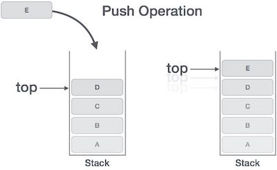
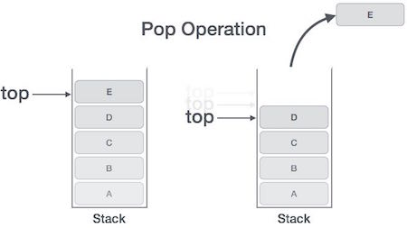

Aim:
Implement Stack ADT using an array.
Theory:
Stack can be represented using an array. Stack is open at one end and
operations can be performed on a single end. We can have different primitive
operations on Stack Data Structure.
- Push Operation on Stack : We have declared data array in the above declaration. Whenever we add any element in the „data‟ array then it will be called as “Pushing Data on the Stack”.
- Pop Operation on Stack : Whenever we try to remove an element from the stack then the operation is called POP Operation on Stack.
Suppose “top” is a pointer to the top element in a stack. After every push operation, the value of “top” is incremented by one.


Algorithm:
- Push(): Description: Here STACK is an array with MAX locations. TOP points to the top most element and ITEM is the value to be inserted.
- If (TOP == MAX-1) Then [Check for overflow]
- Print: Overflow
- Else
- Set TOP = TOP + 1 [Increment TOP by 1]
- STACK[TOP] = ITEM [Assign ITEM to top of STACK]
- Print: ITEM inserted [End of If]
- Exit
- Pop(): Description: Here STACK is an array with MAX locations. TOP points to the top most element.
- If (TOP == -1) Then [Check for underflow]
- Print: Underflow
- >Else
- Set ITEM = STACK[TOP]
[Assign top of STACK to ITEM] - Set TOP = TOP - 1
[Decrement TOP by 1] - Print: ITEM deleted
[End of If] - Exit
Simulation:
Quiz:
Feedback: